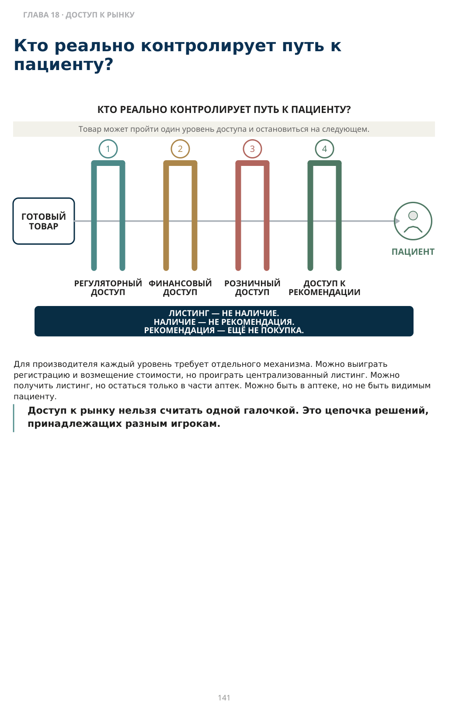

Кто контролирует доступ к рынку?
Листинг, СТМ и доступ к полке
Кого производитель обычно считает главным конкурентом? Другого производителя с той же молекулой, похожей ценой и сопоставимым качеством. Но на консолидированном рынке самым сильным ограничением может стать не соседний завод. Им может стать покупатель, который решает, увидит ли пациент ваш товар вообще.
В предельной конфигурации у производителя могут быть десятки конкурентов — и всего несколько покупателей, которые реально определяют доступ к рынку.
| УРОВЕНЬ | ЧТО ОЗНАЧАЕТ |
|---|---|
| 1. Регуляторный | Товар зарегистрирован и может законно обращаться на рынке |
| 2. Финансовый | Пациент, государство или иной плательщик способен оплатить лечение |
| 3. Розничный | Товар залистован, распределён и реально доступен в аптеке |
| 4. Доступ к рекомендации | Пациент видит или получает релевантную альтернативу |
Листинг — не уровень наличия. Наличие — не рекомендация. Рекомендация — ещё не покупка.
Для производителя каждый уровень требует отдельного механизма. Можно выиграть регистрацию и возмещение стоимости, но проиграть централизованный листинг. Можно получить листинг, но остаться только в части аптек. Можно быть в аптеке, но не быть видимым пациенту.
Доступ к рынку нельзя считать одной галочкой. Это цепочка решений, принадлежащих разным игрокам.

Описание схемы
FIG_069: Кто реально контролирует путь к пациенту?
Путь товара к пациенту проходит через несколько независимых уровней доступа: регуляторный, финансовый, розничный, а также доступ к рекомендации. Владение каналом не равно полному контролю над маршрутом пациента.
Когда покупатель становится экономическим конкурентом
Сильная аптечная сеть получает дополнительную маржу от собственной торговой марки. Она контролирует ассортимент, полку, данные, акции и мотивацию персонала. СТМ сама по себе не является проблемой. Для сети это рациональный инструмент прибыли и дифференциации. Но для внешнего производителя она меняет структуру переговоров: сеть сравнивает его предложение уже не только с другим брендом, но и с продуктом, экономика которого частично принадлежит самой сети.
| Раздробленная розница | Консолидированная розница |
|---|---|
| Много покупателей и локальных решений | Несколько централизованных центров закупок |
| Отказ одной аптеки почти не меняет доступность | Неудача в одной сети может закрыть значительную долю спроса |
| Ни один покупатель не контролирует весь путь | Сеть усиливает власть через ассортимент, данные и СТМ |
Чем меньше маршрутов к пациенту, тем больше сила того, кто контролирует эти маршруты.
Для производителя это означает: концентрацию розницы нужно рассматривать не только как историю канала, но и как изменение собственной будущей переговорной позиции.
Не ждать, пока консолидация завершится
Пока рынок раздроблен, отказ одной аптеки или одной группы не закрывает производителю значительную часть спроса. У него остаётся много независимых маршрутов к рынку. По мере укрупнения сетей ситуация меняется: много независимых
покупателей → несколько централизованных центров закупок → каждый отказ становится дороже → переговорная сила канала растёт → производителю
сложнее получить листинг и сохранить экономику продукта. Поэтому на ранних стадиях консолидации производитель может законно участвовать в публичном обсуждении правил рынка и поддерживать конкурентную среду, не позволяющую чрезмерной концентрации закрыть независимые маршруты к пациенту. Аргумент должен быть шире коммерческого интереса одной компании: конкуренция, доступ пациента и устойчивость поставок. Когда рынок уже сконцентрирован, производитель торгуется с сильным каналом. Пока рынок только консолидируется, он ещё может участвовать в формировании правил, по которым этот канал станет сильным.
ДОСТУП МОЖНО ОГРАНИЧИТЬ БЕЗ ПРЯМОГО ОТКАЗА
Листинг может быть согласован, но товар появится только в части аптек; уровень наличия останется низким; продукт не попадёт в приоритетные акции; матрица будет обновляться медленно; персонал будет мотивирован предлагать другие продукты. Производитель может выиграть право быть на полке и всё равно проиграть право быть выбранным.
ПРОВЕРКА ЭТАПА
| РУКОВОДИТЕЛЬ ДОЛЖЕН ВИДЕТЬ | Долю рынка по ключевым закупочным группам; представленность; уровень наличия по сетям; продажи через розницу; долю зависимого объёма; стоимость доступа к каждой сети. |
|---|---|
| ЛОВУШКА | Считать централизованный листинг конечной победой и не измерять, что происходит в каждой аптеке и у первого стола. |
| ЧТО ДАЛЬШЕ? | Создать портфель независимых маршрутов к пациенту. |